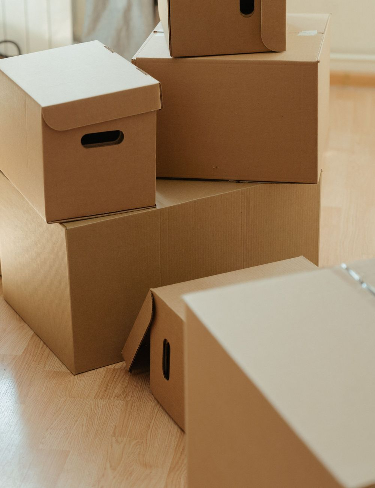
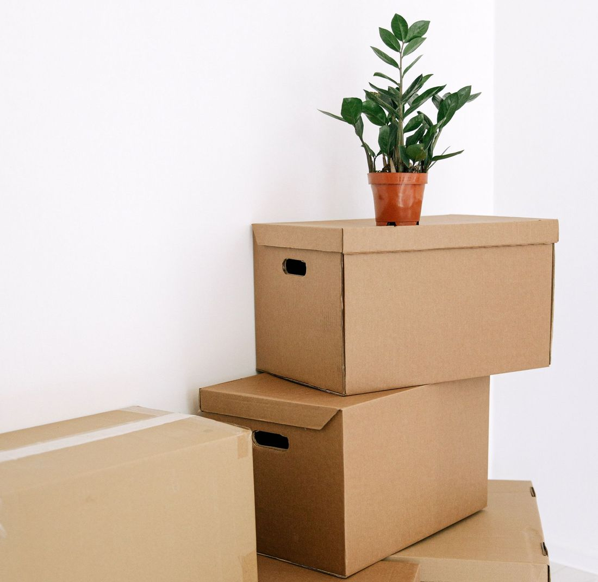
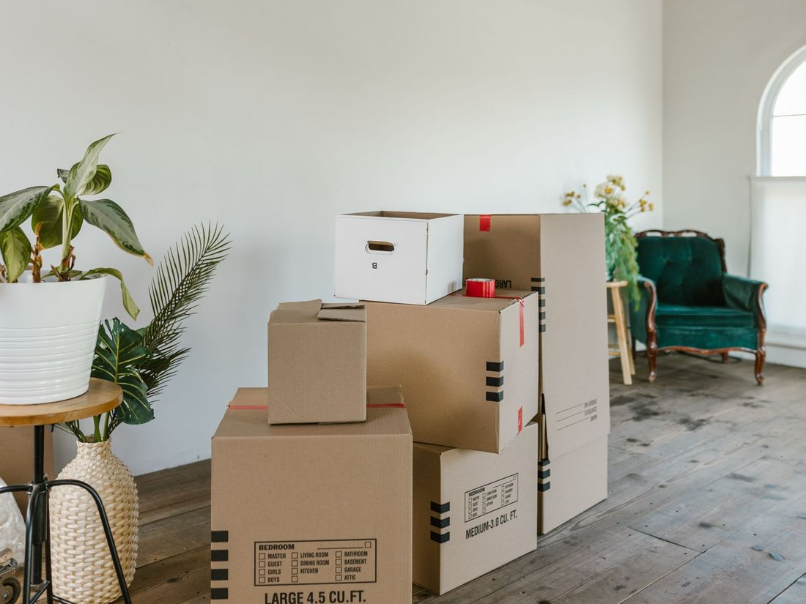
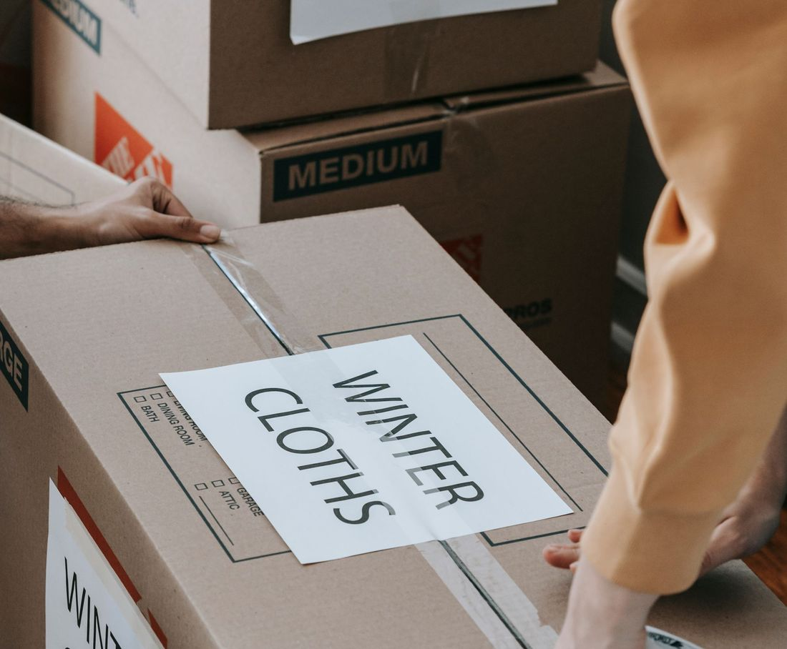
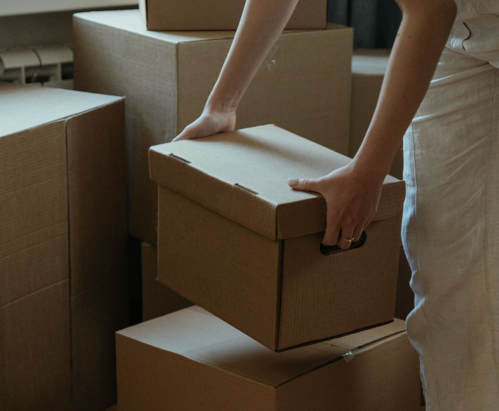

Kadıköy evden eve nakliyat, derli toplu taşınma
Eşyalarınız koliye girdiği andan yeni evinize yerleşene kadar planlı ilerleyen bir taşınma. Evinizin durumunu bildirin, size uygun planı ve fiyatı birlikte netleştirelim.

Her taşınma türü için ayrı plan
Evden ofise, tek odadan müstakil eve kadar ihtiyacınıza uygun taşıma hizmetleri.

01Evden eve nakliyat
Eşyalarınız paketlenir, araca yerleştirilir ve yeni adresinizde yerlerine konur. Ev büyüklüğüne göre ekip ve araç planlanır.
- Ev büyüklüğüne göre ekip ve araç planı
- Yükleme ve yerleştirme aynı ekiple
 02
02Şehirlerarası nakliyat
Farklı şehre taşınacaklar için güzergâha ve eşya miktarına göre araç ve zamanlama planlanır. Yük, yol boyunca sabit kalacak şekilde yerleştirilir.
- Güzergâha uygun araç ve zamanlama
- Yükün yolda sabit kalması için sabitleme

03Asansörlü taşıma
Yüksek katlarda ve dar merdivenli binalarda eşyalar dışarıdan asansörle indirilip çıkarılabilir. Bina ve sokak durumu keşifte değerlendirilir.
- Bina ve sokak durumuna göre asansör planı
- Keşifte erişim ve park durumu değerlendirilir
 04
04Paketleme ve ambalaj
Kırılacak eşyalar, giysiler ve mutfak gereçleri uygun malzemeyle paketlenir. Kolilerin üstü odasına göre etiketlenir.
- Kırılacak eşyaya özel ambalaj
- Odasına göre etiketli koliler

Mobilya söküm-montaj
Dolap, yatak ve gardırop gibi büyük parçalar taşımadan önce sökülür, yeni evde tekrar kurulur. Vida ve parçalar ayrı poşetlenir.

Ofis ve işyeri taşıma
Masa, dosya, bilgisayar ve arşiv taşınması iş akışı aksamayacak şekilde planlanır. Koli ve mobilya yeni ofis düzenine göre yerleştirilir.

Parça eşya taşıma
Tek bir koltuk, buzdolabı ya da birkaç eşya için tam ev taşıma gerekmez. Küçük yükler için uygun araçla taşıma yapılır.
Taşınma türünüzü seçin, planınızı görün
Taşınma türünüze ve durumunuza göre neye dikkat etmeniz gerektiğini, neyi önceden hazırlamanız gerektiğini ve ekibimizin neleri üstleneceğini görün.
1Taşınma türü
2Durum
56 Google yorumu
Google'daki yorumlarınız sitede canlı yer alır; memnun müşteriniz tek dokunuşla yeni yorum bırakır.
Kaç m³ eşyanız var, hangi araç gerekir?
Ev büyüklüğünü ve eşya yoğunluğunuzu seçin; yaklaşık hacmi ve uygun araç tipini görün. Sonuç kaba bir tahmindir, kesin plan keşifle netleşir.
Formu doldurun, size dönelim
Form, WhatsApp mesajı olarak hazırlanır ve tek dokunuşla Topaç Evden Eve Nakliyat'a gider.
Çalışma saatleri
| Pazartesi | 24 saat açık |
| Salı | 24 saat açık |
| Çarşamba | 24 saat açık |
| Perşembe | 24 saat açık |
| Cuma | 24 saat açık |
| Cumartesi | 24 saat açık |
| Pazar | 24 saat açık |
Koşuyolu, Gömeç Sok. No:4, 34718 Kadıköy/İstanbul
Kadıköy ve çevresi
Mahallenizi yazın, bölgemizde mi hemen görün.
Sık sorulanlar
Kadıköy evden eve nakliyat fiyatı neye göre belirlenir?
Fiyat; eşya miktarı, iki adres arasındaki mesafe, kat ve asansör durumu, paketleme isteği ve taşınma tarihine göre belirlenir. Kesin fiyat için adres ve eşya bilgisi gerekir.
Topaç Evden Eve Nakliyat hangi saatlerde açık?
Paz–Paz 24 saat açık. WhatsApp'tan her zaman yazabilirsiniz; mesai içinde dönüş yapılır.
İstanbul içinde taşınma için keşif gerekir mi?
Az eşyalı taşınmalarda fotoğraf ve bilgi yeterli olabilir. Eşya çoksa ya da bina erişimi zorsa keşif planı daha doğru sonuç verir.
Paketlemeyi kendim yapabilir miyim?
Evet. Koliler kapalı, etiketli ve ağır değilse yükleme hızlanır. İsterseniz kırılacak eşyaları ekibimiz paketler.
Mobilyalar sökülüp yeniden kurulur mu?
Gardırop, yatak ve büyük dolaplar gerektiğinde sökülür, yeni evde yeniden kurulur. Hangi eşyaların söküleceğini talep sırasında belirtmeniz yeterli.
Taşınma günü bina ve park durumu önemli mi?
Evet. Aracın kapıya yaklaşabilmesi, asansör ve merdiven durumu süreyi etkiler. Gerekirse bina yönetiminden izin almanız faydalı olur.
Şehirlerarası taşınmada eşyalarım ne kadar sürede ulaşır?
Süre mesafeye, yük planına ve güzergâha bağlıdır. Teslim aralığı talep sırasında netleştirilir.
Sadece birkaç parça eşya taşıtabilir miyim?
Evet. Parça eşya taşıma için tam ev taşıma gerekmez; eşyanın ölçüsünü ve adresleri paylaşmanız yeterlidir.
Kadıköy evden eve nakliyat: neden Topaç Evden Eve Nakliyat?
İstanbul Kadıköy bölgesinde evden eve nakliyat, ofis taşıma, paketleme ve parça eşya taşıma hizmeti arayanlar için Topaç Evden Eve Nakliyat planlı bir taşınma süreci sunar. Eşyalar koli ve örtüyle hazırlanır, araca sabitlenir ve yeni adreste yerlerine yerleştirilir.
Taşınma fiyatı eşya miktarı, mesafe, kat ve asansör durumuna göre değişir. Bu yüzden önce adres ve eşya bilgilerinizi alıyor, sonra ekibimiz sizinle birlikte planı netleştiriyor. Fiyat talebini bu sayfadan WhatsApp ile iletebilirsiniz.